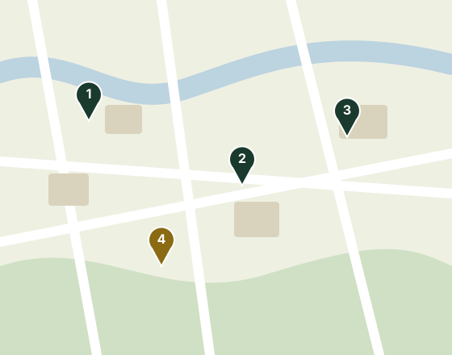

Pontos de coleta e frentes de atuação
Encontre o ecoponto ou posto de entrega voluntária mais próximo de você, em Praia Grande.
Pontos de coleta disponíveis
Veja os ecopontos oficiais de Praia Grande.
-
Ecoponto Aviação
Rua José Alves Maciel — AviaçãoMateriais aceitos:
Ver no mapa — Ecoponto Aviação (abre em nova aba) -
Ecoponto Boqueirão
Rua Guanabara — BoqueirãoMateriais aceitos:
Ver no mapa — Ecoponto Boqueirão (abre em nova aba) -
Ecoponto Tupi
Rua Antônio Renato Gambini, 10 — Vila TupiMateriais aceitos:
Ver no mapa — Ecoponto Tupi (abre em nova aba) -
Ecoponto Mirim
Av. Pres. Kennedy — Nova MirimMateriais aceitos:
Ver no mapa — Ecoponto Mirim (abre em nova aba) -
Ecoponto Glória
Rua Marlene Figuerôa, 110 — GlóriaMateriais aceitos:
Ver no mapa — Ecoponto Glória (abre em nova aba) -
Ecoponto Real
Rua Lilás, 417 — RealMateriais aceitos:
Ver no mapa — Ecoponto Real (abre em nova aba) -
Ecoponto Ocian
Praça Eliezer Rodrigues Coelho — Cidade OcianMateriais aceitos:
Ver no mapa — Ecoponto Ocian (abre em nova aba) -
Ecoponto Samambaia
Rua dos Jacarandás — SamambaiaMateriais aceitos:
Ver no mapa — Ecoponto Samambaia (abre em nova aba) -
Ecoponto Caiçara
Av. Pres. Kennedy — Vila CaiçaraMateriais aceitos:
Ver no mapa — Ecoponto Caiçara (abre em nova aba)

Nossas frentes
Mapeamento
Reunimos e mantemos atualizada a lista de ecopontos e dos materiais que cada um recebe.
Apoio às cooperativas
Aproximamos moradores de cooperativas e iniciativas locais, valorizando o trabalho e a geração de renda.
Educação ambiental
Oficinas de reciclagem e mutirões de limpeza que levam a informação para dentro da comunidade.
O que nossos vizinhos dizem
Depoimentos ilustrativos, criados para este projeto acadêmico.
O ecoponto do Boqueirão é super organizado. Levo meus recicláveis e o atendimento é sempre muito rápido!
Muito bom ter ecopontos estruturados pela cidade. Antes eu não sabia onde descartar entulhos sem poluir o meio ambiente.
A iniciativa facilitou muito a nossa rotina de descarte correto na baixada. Nota dez pela organização!